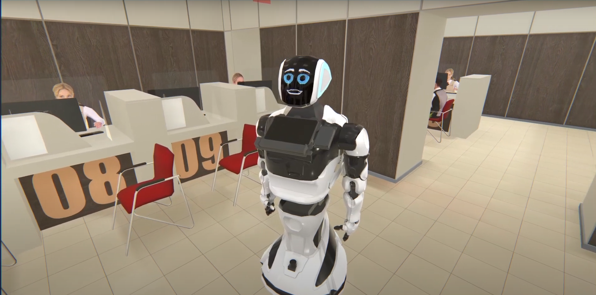
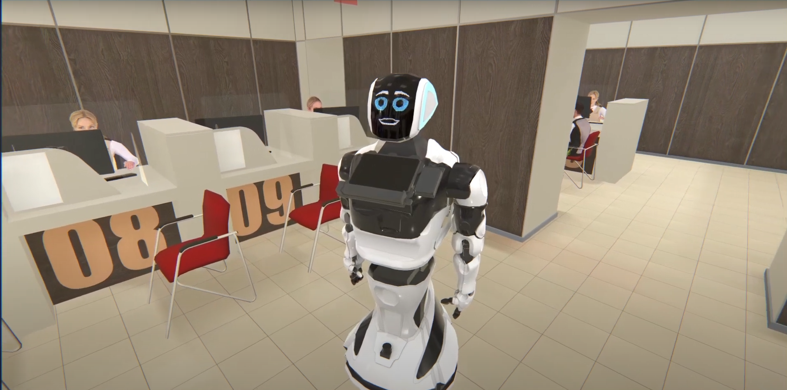

Project - VR Excursion
 

Unity Junior Developer
With this project, the team achieved 4 times the involvement in the excursion
Payback less than 1 year
On this project, I made a connection, showing the animation of the robot, the movement of the robot, the revival of facial expressions to the soundtrack of the announcer. This is the first project in the team, and it turned out great. Customers highly appreciated this project and continued cooperation.
13 days